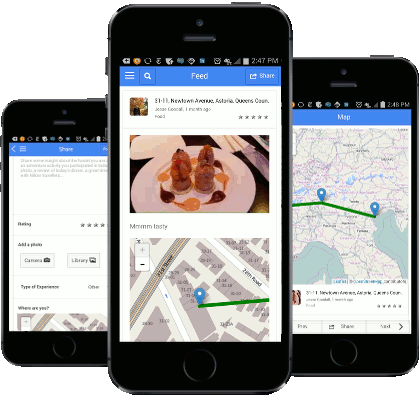

A User-Driven Travel Guide.


In March of 2014 I backpacked through Belize and Guatemala and met a lot of amazing people. I had my trusty guide book to help me find places to visit and facebook to keep in touch but I was frustrated because neither of these could tell me how to find and travel with fellow backpackers. Having a deep love of travel and technology I was shocked that we still live in an age of static guide books and no app dedicated to connecting travellers, analyzing travel routes, and sharing things to do in real time. I have set out to create an app to help guide backpackers and travellers through the best paths for their travels: Hop a Path. ~ Jesse